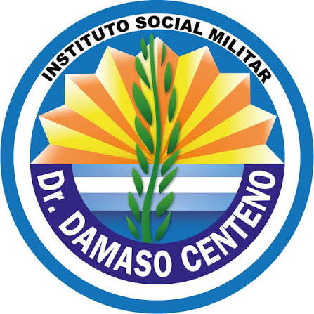

Hola, soy Alejo Sánchez, esta es mi primer página web.
Tengo 19 años, naci el 31/08/2006 en el barrio de Caballito. Me gustan mucho los gatos, actualmente tengo uno llamado Lio que me acompaña hace 10 años.
Durante mi etapa escolar siempre asistí al
Inst. Social Militar Dr. Dámaso Centeno, donde comencé la primaria hasta que termine la secundaria.
A lo largo de ese tiempo viví muchas experiencias, no solo contenidos sino las personas más importantes de mi vida.
También fui estudiante de
Asociación Argentina de Cultura Inglesa donde estudié inglés desde 2014 hasta 2023, alcanzando el nivel FIRST, aunque finalmente no llegué a rendir el examen.
Además jugué al basquet en el colegio participando en torneos interescolares, y también en Ferro Carril Oeste
donde jugué de manera recreativa, sin pasar a una categoría competitiva.

Actualmente estoy en el primer año de una Licenciatura en Gestion de Tecnologia de la Información en la Universidad Argentina de la Empresa (UADE).
También trabajo de forma esporádica en eventos corporativos, cumpliendo funciones de guía y control de orden entre los asistentes.
Me apasionan los autos, en especial la marca BMW, que sigo de cerca por su diseño, su rendimiento y la tecnología que incorpora en cada modelo. Me gusta investigar sobre sus distintas lineas y lo que las distingue entre sí. En cuanto a la música, no tengo un género favorito ni me cierro a uno solo, escucho de todo un poco, desde rock nacional hasta trap argentino y reggaetón dependiendo del momento y del humor que tenga. Donde sigo mucho a Ysy A También soy hincha de River Plate y sigo al club, tanto en sus partidos como en las distintas competencias en las que participa.